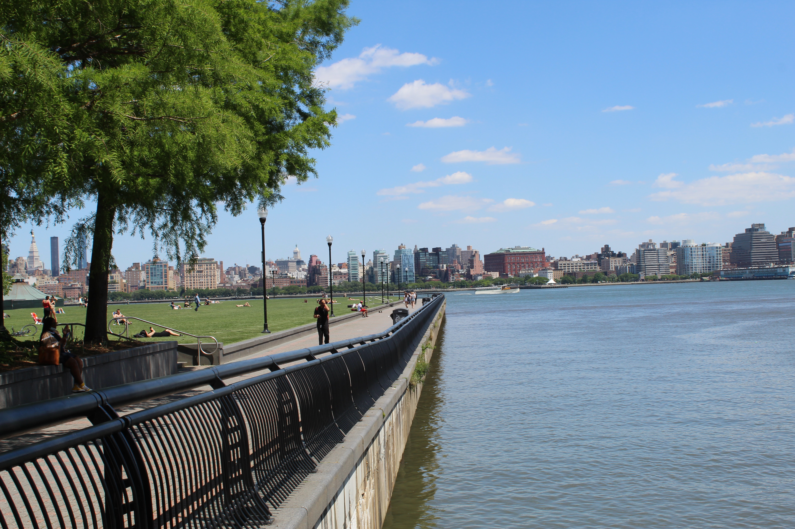

Welcome to Hoboken!
Located along the Hudson River with a backdrop of the iconic Manhattan skyline, Hoboken, New Jersey, is a vibrant city with energy and character. Known for its historic charm and diverse community, Hoboken has a perfect blend of urban fun and small-town charm. The popular Washington Street is a hub of activity, featuring boutiques, lively bars, and unique eateries. With its waterfront parks and stunning views of New York City, Hoboken provides a picturesque setting for walks and outdoor recreation. The city's rich cultural scene includes art galleries, music venues, and the historic Hoboken Terminal. Whether enjoying a walk along the waterfront, enjoying local cuisine, or immersing in the city's lively atmosphere, Hoboken wants residents and visitors alike to experience its welcoming spirit.
| Facts | Details |
|---|---|
| Population | 57,703 |
| Year Incorporated | 1855 |
| Classification | Urban |
| Average Income (Household) | 168,137 |
| Region | North |